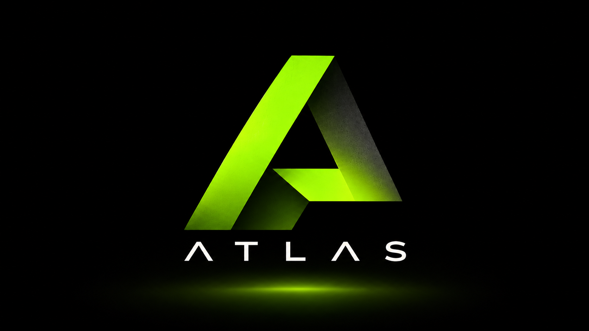

O mundo mudou.
Seu negócio também.
Unimos presença digital e design para ajudar negócios a se apresentarem melhor, conquistarem confiança e criarem novas oportunidades.

Tecnologia deve abrir caminhos.
Não criar barreiras.
O Atlas é uma empresa de Business & Technology que une estratégia, tecnologia e criatividade para ajudar negócios a evoluírem. Atuamos por meio de duas frentes principais: Atlas Digital, dedicada à presença e às experiências digitais, e Atlas Design, voltada à identidade e à comunicação de marcas.
Combinamos inteligência artificial, processos inteligentes e pensamento estratégico para tornar soluções de qualidade mais acessíveis, práticas e eficientes.
Presença digital que gera oportunidades
Fortalecemos a presença dos negócios no ambiente digital com sites, landing pages, catálogos e lojas virtuais. Criamos experiências claras e funcionais para aproximar marcas e pessoas, ampliar oportunidades e apoiar objetivos de negócio.
Marcas com identidade e propósito
Construímos identidades e experiências visuais que ajudam negócios a expressar seu valor. Atuamos com identidade visual, branding e comunicação de marca para fortalecer reconhecimento, consistência e conexão com o público.
Estratégia e eficiência operacional
Uma frente em preparação para apoiar negócios na organização de processos, gestão por indicadores, melhoria contínua e identificação de oportunidades de automação.
Sistemas e soluções digitais
Uma frente em desenvolvimento para criar aplicações, integrações e ferramentas digitais que reduzam controles manuais, conectem informações e simplifiquem a rotina dos negócios.
Novas ideias que viram negócios
Uma frente em construção dedicada a explorar oportunidades, validar ideias e desenvolver iniciativas e produtos com potencial de gerar valor.
Fazer mais
com menos.
Acreditamos que tecnologia, inteligência artificial e boas decisões de processo podem reduzir tarefas repetitivas, simplificar operações e tornar serviços de qualidade mais acessíveis.
Fazer mais com menos não é fazer menos pelo cliente. É eliminar o que não agrega, concentrar energia no que importa e construir soluções inteligentes para cada realidade.
Conhecimento que vira ação.
A Atlas Academy é nossa iniciativa de educação e compartilhamento de conhecimento. Seu objetivo é aproximar empreendedores de tecnologia, inteligência artificial e práticas de gestão por meio de conteúdos acessíveis e aplicáveis à realidade dos negócios.
Trabalho que ganha forma.
Uma seleção de projetos e experiências desenvolvidas pelo Atlas.
Uma visão prática de tecnologia e negócios.
O Atlas é liderado por Fidel, fundador e responsável pela direção estratégica. A proposta é unir experiência em gestão, operações e melhoria contínua à tecnologia para desenvolver soluções aplicáveis à realidade de quem empreende.
Vamos movimentar seu negócio?
Conte o que você precisa em presença digital ou identidade visual. Vamos entender seu momento e indicar o próximo passo.